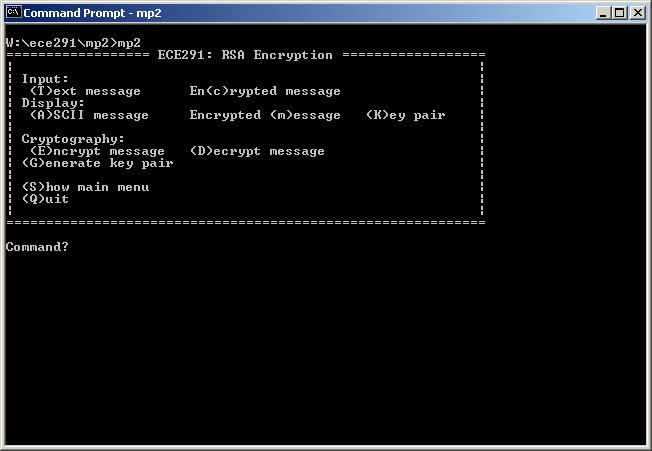

| ECE 291 | Computer Engineering II | Potts, Spring 2001 |
| Assigned | Thursday 2/8/01 |
| Due Date | Wednesday 2/14/01 : Checkpoint Monday 2/26/01 : Final |
| Purpose | To deal with subroutines, user I/O, and develop an understanding of encryption algorithms. |
| Points | 50 |
The two keys describe a function and it's inverse. That is for a public key, with a function P() and a secret key with a function S(). So, for a message M, P(S(M)) = M, and S(P(M)) = M. This is in contrast to private key cryptosystems in which there is only one function which is it's own inverse. Under private key encryption, for a private key with a function P() and a message M, P(P(M)) = M. Since it is possible to decrypt and encrypt a message with the same key, under private key encryption, it is necessary to keep the encryption key private.
RSA encryption, which stands for RSA stands for Ron Rivest, Adi Shamir and Leonard Adelman, is one of the most common methods of encrypting data today. Many algorithms use RSA as a basis for their encryption. PGP for example uses RSA to encrypt an IDEA key which is sent with the IDEA-encrypted message. Only with the correct RSA private key can you decrypt the IDEA key to decrypt the message.
In this MP, we will write an interactive assembly program that encodes and decodes text messages using RSA. Because this MP is much larger and more complex than the first, we will be handling it in two stages: a checkpoint, due on the 14th, where you will be required to demonstrate 3 of the ten functions (Get Input, ParseInput, DisplayBuffer) and the final submission, where you will be required to demonstrate all of the required functions.
where (e, n) make up the public key. (e is the pubkey variable and n is
the mod variable.) Decryption is accomplished
by the inverse operation:
T = C^d mod n
where (d, n) make up the secret key. (d is the prikey variable and n is the mod variable.)
It should be noted that for a modulus n, you can only encode a block of text (T) that is less than n, which will produce a block of encrypted text (C) which is also less than n. For that reason, in this MP, we will be encoding 7-bit clean ASCII using a modulus > 127. The 8 bit codes can then be decrypted back into 7-bit clean ASCII.
To determine an RSA key pair, the following steps need to be followed:
1. Choose two prime numbers
p and q.
2. Multiply p*q to obtain
n. (p is prime1 and q is prime 2.)
3. Choose an encryption
key (e) which is less than {(p-1)(q-1)} and relatively prime* to {(p-1)(q-1)}.
4. Determine a decryption
key (d) such that d*e % {(p-1)(q-1)} = 1.
* Two numbers are relatively prime if they share no common
factors. In other words, the greatest common factor of two relatively
prime numbers is 1.
The public key (e, n) can now be given out freely, because it can only be used to encrypt a message. Determining the secret key from the public key (or breaking the code) is only as difficult as factoring n into it's two prime factors. For our version of RSA encryption, we are imposing the limit that n must be 8 bits long. However, RSA encryption typically uses keys that are 512, 768 or 1024 bits long.
Rather than generating random prime numbers for the key, the program will generate p, q and e. Then n and d will be calculated by the computer. This implementation is limited to encoding and decoding a single 250 byte buffer. Each byte will be encrypted and decrypted individually. The user can either enter hex values or ASCII text into the buffer to be encrypted or decrypted.
Some algorithms are described below to help you program your mp.
Let s = 1. For k = w-1 to 0: If (bit k of x) is 1 then Let R = (s · y) mod n Else Let R = s Let s = R2 mod n Return (R)(From: http://www.cryptography.com/timingattack/ )
Please note that this operation runs from the most significant bit of the exponent to the least significant bit of the exponent. This allows exponentiation to be done in a loop relative to the length of the exponent. So, for an 200 bit exponent, only 200 iterations need to be done, not 2^200.
Let f(a, b, c) be a function such that
f(a, b, c)*a mod b = c.
For simplicity, let f(a, b, c) = x0 where x0 is an integer
Note that the definition of A mod B = C states that
(x * B) + C = A
where A, B, and C are constants and x is some integer.
The Original Equation. Note that c < a
(1) (x0 * a) mod b = c
By the defintion of the modulus:
(2) (x1 * b) + c = (x0 * a) , Where x1 is some integer.
Subtract c from both sides
(3) (x1 * b) = (x0 * a) + (-c)
Taking both sides of the equation mod a:
(4a) (x1 * b) mod a = ((x0 * a) + (-c)) mod a
Since a is a factor of (x0 * a)
(4b) (x1 * b) mod a = (-c) mod a
Note that this step is the inverse of how
(2) was derived from (1).
By the property (A*B) mod C = (A*(B mod C)) mod C
(5) (x1 * (b mod a)) mod a = (-c) mod a
Note that (b mod a) and ((-c) mod a) are both constants defined
in terms of the inputs to the function a, b, and c. So, let:
b mod a = e
(-c) mod a = f
Performing this substitution gives:
(6) (x1 * e) mod a = f
Noting that this is exactly in the form of (1), we can solve for x1:
(7a) x1 = f(e, a, f)
Performing the back substitutions
(7b) x1 = f(b mod a, a, -c mod a)
Combining (7b) with (2):
(8a) (x0 * a) = f(b mod a, a, -c mod a) * b + c
and using the definition x0 = f(a,b,c)
(8b) (f(a,b,c) * a) = f(b mod a, a, -c mod a) * b + c
Dividing through by a we get:
(9) f(a, b, c) = (b*f(b mod a, a, -c mod a) + c)/a
Note that (b mod a) < a < b, and c < a.
This suggests that the recursion will shrink down to
some base case, or a set of base cases. In this case, the base
case for "d*e mod n = 1" is that when c=0, f(a,b,c)=0.
It is also possible that f(a, b, c) is undefined
if a = 0 (division by 0). To see what it means if f(a,b,c)
is undefined, we will work the recursion backwards.
After the nth iteration
a(n) = 0
Therefore
b(n-1) mod a(n-1) = 0
This implies that a(n-1) is a factor of b(n-1), however
b(n-1) = a(n-2)
So, a(n-1) is also a factor of a(n-2)
Also,
a(n-1) = b(n-2) mod a(n-2)
Now, taking both sides mod a(n-1)
a(n-1) mod a(n-1) = (b(n-2) mod a(n-2)) mod a(n-1)
Since A mod A = 0:
0 = (b(n-2) mod a(n-2)) mod a(n-1)
Using the definition of the modulus twice:
x1 * a(n-1) = b(n-2) mod a(n-2) , Where x1 is an integer
(x1 * a(n-1)) = b(n-2) - x2 * a(n-2) , Where x2 is an integer
But, since a(n-1) is a factor of a(n-2)
(x1 * a(n-1)) = b(n-2) - x2 * x3 * a(n-1) , Where x3 is an integer
Letting x2 absorb x3 since both are arbitrary integers:
(x1 * a(n-1) = b(n-2) - x2 * a(n-1)
Adding x2 * a(n-1) and distributing the a(n-1)
a(n-1)(x1 + x2) = b(n-2)
Letting x1 absorb x2 since both are arbitrary integers:
a(n-1)*x1 = b(n-2)
Therefore, a(n-1) is a factor of b(n-2). It was already shown
that a(n-1) is a factor of a(n-2). By induction, a(n-1) is a
factor of a(k) and b(k) where k < n and a(n) = 0. Actually, with a
slight modification to the proof, it could be shown that a(n-1) is the
greatest common factor of a(k) and b(k) for k < n.

The user interface for this program consists of 10 different commands, which are described below. You are strongly encouraged to experiment with the executable yourself to get a feel for what the program does.
This assignment has ten procedures. You will receive credit by replacing each of these procedures listed below with your own code. Assume these functions call library routines such as dspmsg as needed.
| GetInput |
|
| ParseInput |
|
| DisplayBuffer |
|
| Random |
|
| GetBits |
|
| Solve |
|
| PowMod |
|
| CheckPrime |
|
| GenerateKeyPair |
|
| Crypt |
|
1. Demonstrate your MP2.EXE to a TA. You may be asked to recompile and demo the program. Your program must work with all given input.
2. Be prepared to answer questions about any aspect of the operation of your program. The TAs will not accept an MP if you cannot fully explain your code and your implementation. Delayed MPs will be subject to late penalties as described in the course syllabus (10/pts per day).
3. The TA will complete the code submission procedure.
; MP2 - RSA Encryption
; Your Name
; Today's Date
;
; Josh Potts, Spring 2001
; Authors: Justin Quek, Chris Jones
; University of Illinois, Urbana-Champaign
; Dept. of Electrical and Computer Engineering
;
; Version 1.0
BITS 16
;====== SECTION 1: Define constants =======================================
BS EQU 08h
LF EQU 0Ah
CR EQU 0Dh
ESC EQU 1Bh
MAXLEN EQU 250
ASCII EQU 0
HEX EQU 1
;====== SECTION 2: Declare external procedures ============================
; These functions are given to you -- you do NOT have to write them
EXTERN kbdin, dspout, dspmsg, ascbin, binasc, mp2xit
; You will have to replace these library functions with your own code
EXTERN libGetInput, libParseInput, libDisplayBuffer
EXTERN libRandom
EXTERN libGetBits, libSolve, libPowMod, libCheckPrime
EXTERN libGenerateKeyPair, libCrypt
; These are required for the library routines to work
GLOBAL inputbuf, cryptbuf, inputbuflen, cryptbuflen
GLOBAL prime1, prime2, mod, pubkey, prikey
GLOBAL seed
GLOBAL tempvar, binascbuf
GLOBAL Menu, Command, Invalid, Input, Output, HexMsg, AscMsg
GLOBAL Public, Private, Encrypt, Decrypt, Create, KeyMsg, ModMsg, Quit
GLOBAL GetInput, ParseInput, DisplayBuffer, Random, GetBits
GLOBAL Solve, PowMod, CheckPrime, GenerateKeyPair, Crypt
;====== SECTION 3: Define stack segment ===================================
SEGMENT stkseg STACK ; *** STACK SEGMENT ***
resb 64*8
stacktop:
resb 0
;====== SECTION 4: Define code segment ====================================
SEGMENT code ; *** CODE SEGMENT ***
;====== SECTION 5: Declare variables for main procedure ===================
inputbuf resb MAXLEN ; buffer for input
db '$' ; in case =)
cryptbuf resb MAXLEN ; buffer for messages
db '$' ; in case =)
inputbuflen db 0 ; input buffer length
cryptbuflen db 0 ; message buffer length
prime1 db 0 ; 1st prime number
prime2 db 0 ; 2nd prime number
mod db 0 ; prime1*prime2
pubkey db 0 ; public key (with modulus)
prikey db 0 ; private key (with modulus)
seed dw 3 ; seed for random number generator
tempvar dw 0 ; temporary variable
binascbuf resb 7 ; buffer for binasc
db '$' ; so we can use dspmsg
; Strings for User Interface
Menu db '================== ECE291: RSA Encryption ==================',CR,LF
db '| |',CR,LF
db '| Input: |',CR,LF
db '| (T)ext message En(c)rypted message |',CR,LF
db '| Display: |',CR,LF
db '| (A)SCII message Encrypted (m)essage (K)ey pair |',CR,LF
db '| |',CR,LF
db '| Cryptography: |',CR,LF
db '| (E)ncrypt message (D)ecrypt message |',CR,LF
db '| (G)enerate key pair |',CR,LF
db '| |',CR,LF
db '| (S)how main menu |',CR,LF
db '| (Q)uit |',CR,LF
db '| |',CR,LF
db '============================================================',CR,LF,'$'
Command db CR,LF,'Command? ','$'
Invalid db 'Invalid choice!',CR,LF,'$'
Input db 'Please enter your message in ','$'
Output db 'Here is the buffer in ','$'
HexMsg db 'HEX:',CR,LF,'$'
AscMsg db 'ASCII:',CR,LF,'$'
Public db 'The public key (key, mod) is: (','$'
Private db 'The private key (key, mod) is: (','$'
Encrypt db 'Encrypting the buffer...',CR,LF,'$'
Decrypt db 'Decrypting the buffer...',CR,LF,'$'
Create db 'Generating new keys (this may take a while)...',CR,LF,'$'
KeyMsg db 'Please enter the key to use (currently ','$'
ModMsg db 'Please enter the modulus (currently ','$'
Quit db 'Goodbye!',CR,LF,'$'
;====== SECTION 6: Program initialization =================================
..start:
mov ax, cs ; Initialize Default Segment register
mov ds, ax
mov ax, stkseg ; Initialize Stack Segment register
mov ss, ax
mov sp, stacktop ; Initialize Stack Pointer register
;====== SECTION 7: Main procedure =========================================
MAIN:
; Print Main menu
mov dx, Menu
call dspmsg
.MP2loop
; Display prompt
mov dx, Command
call dspmsg
; Get user choice
call kbdin
and al, 0dfh ; make input upper case
; Newline
mov dl, CR
call dspout
mov dl, LF
call dspout
; Call appropriate function
cmp al, 'T'
jne .notT
mov dx, Input
call dspmsg
mov dx, AscMsg
call dspmsg
xor ax, ax
call GetInput
call ParseInput
jmp .MP2loop
.notT
cmp al, 'C'
jne .notC
mov dx, Input
call dspmsg
mov dx, HexMsg
call dspmsg
mov ax, 1
call GetInput
call ParseInput
jmp .MP2loop
.notC
cmp al, 'A'
jne .notA
xor ax, ax
call DisplayBuffer
jmp .MP2loop
.notA
cmp al, 'M'
jne .notM
mov ax, 1
call DisplayBuffer
jmp .MP2loop
.notM
cmp al, 'K'
jne .notK
.showkeys
mov dx, Public
call dspmsg
xor ax, ax
mov al, byte [pubkey]
call ShowKey
mov dx, Private
call dspmsg
xor ax, ax
mov al, byte [prikey]
call ShowKey
jmp .MP2loop
.notK
cmp al, 'E'
jne .notE
mov dx, Encrypt
call dspmsg
xor ax, ax
mov al, byte [pubkey]
jmp .crypt
.notE
cmp al, 'D'
jne .notD
mov dx, Decrypt
call dspmsg
xor ax, ax
mov al, byte [prikey]
jmp .crypt
.crypt
; Get public key
mov dx, KeyMsg
call dspmsg
mov bx, binascbuf
call binasc
mov dx, bx
call dspmsg
mov dx, binascbuf
mov word [binascbuf+0], 3f29h ; ')','?'
mov word [binascbuf+2], 2420h ; ' ','$'
call dspmsg
xor ax, ax
call GetInput
mov bx, inputbuf
call ascbin
mov si, ax
; Get modulus
mov dx, ModMsg
call dspmsg
xor ax, ax
mov al, byte [mod]
mov bx, binascbuf
call binasc
mov dx, bx
call dspmsg
mov dx, binascbuf
mov word [binascbuf+0], 3f29h ; ')','?'
mov word [binascbuf+2], 2420h ; ' ','$'
call dspmsg
xor ax, ax
call GetInput
mov bx, inputbuf
call ascbin
; encrypt/decrypt buffer
mov bx, ax
mov ax, si
call Crypt
jmp .MP2loop
.notD
cmp al, 'G'
jne .notG
mov dx, Create
call dspmsg
call GenerateKeyPair
jmp .showkeys
.notG
cmp al, 'S'
jne .notS
mov dx, Menu
call dspmsg
jmp .MP2loop
.invalid
mov dx, Invalid
call dspmsg
jmp .MP2loop
.notS
cmp al, 'Q'
jne .invalid
mov dx, Quit
call dspmsg
call mp2xit ; Exit to DOS
; MAIN()
; ShowKey
; Shows a key
ShowKey:
; Save registers to stack
push ax
push bx
push cx
push dx
; Display key
call binasc
mov dx, bx
call dspmsg
; Punctuation
mov dl, ','
call dspout
mov dl, ' '
call dspout
; Display mod
xor ax, ax
mov al, byte [mod]
mov bx, binascbuf
call binasc
mov dx, bx
call dspmsg
; More punctuation
mov dx, binascbuf
mov word [binascbuf+0], 0d29h ; ')',CR
mov word [binascbuf+2], 240ah ; LF,'$'
call dspmsg
; Restore registers from stack
pop dx
pop cx
pop bx
pop ax
ret
; ShowKey()
;====== SECTION 8: Your Subroutines =======================================
;--------------------------------------------------------------
;-- Instructions: --
;-- Replace Library Calls with your Code! --
;-- [Save all reg values that you modify] --
;-- Do not forget to add Function Headers --
;--------------------------------------------------------------
;--------------------------------------------------------------
;-- GetInput() --
;--------------------------------------------------------------
GetInput:
call libGetInput
ret
; GetInput()
;--------------------------------------------------------------
;-- ParseInput() --
;--------------------------------------------------------------
ParseInput:
call libParseInput
ret
; ParseInput()
;--------------------------------------------------------------
;-- DisplayBuffer() --
;--------------------------------------------------------------
DisplayBuffer:
call libDisplayBuffer
ret
; DisplayBuffer()
;--------------------------------------------------------------
;-- Random() --
;--------------------------------------------------------------
Random:
call libRandom
ret
; Random()
;--------------------------------------------------------------
;-- GetBits() --
;--------------------------------------------------------------
GetBits:
call libGetBits
ret
; GetBits()
;--------------------------------------------------------------
;-- Solve() --
;--------------------------------------------------------------
Solve:
call libSolve
ret
; Solve()
;--------------------------------------------------------------
;-- PowMod() --
;--------------------------------------------------------------
PowMod:
call libPowMod
ret
; PowMod()
;--------------------------------------------------------------
;-- CheckPrime() --
;--------------------------------------------------------------
CheckPrime:
call libCheckPrime
ret
; CheckPrime()
;--------------------------------------------------------------
;-- GenerateKeyPair() --
;--------------------------------------------------------------
GenerateKeyPair:
call libGenerateKeyPair
ret
; GenerateKeyPair()
;--------------------------------------------------------------
;-- Crypt() --
;--------------------------------------------------------------
Crypt:
call libCrypt
ret
; Crypt()